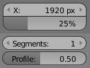
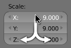

数字按钮¶

数字按钮。
(成组或单个)。
数字按钮用于容纳数值。
通过左侧(◂) 与 右侧 (▸) 的三角形可以辨认出数字按钮。第二种类型的数字滑块背景是一个长条，用于有取值范围的数值，如百分数值。两种类型形状都是圆角矩形。多数情况下，还会包含名称、冒号，和数值。编辑数值的方式有以下几种：
- 步长递增/减
LMB单击小三角形(仅适用于数字按钮)，以固定步长增减数值。- 拖动
- 要在更大范围内修改数值，按下
LMB，并向左侧或右侧拖动鼠标。按下Ctrl并拖动，可以吸附阶梯增量，Shift则用于精确输入。 - 文字输入
按下
LMB或者Enter以文本框方式编辑数值。手动输入数值时，与其他文本框没有区别。
- 在文本框外部按
Enter或LMB，应用修改。 Esc或RMB用于取消修改。Tab用于跳到下一个数字按钮， 或者Ctrl-Tab调到上一个。
- 在文本框外部按
鼠标在按钮上悬停并按下 Minus ，用于对数值取负。
多数值编辑¶

多数值编辑。
可以一次修改多个数字(如物体缩放或者渲染分辨率)。在按钮上按下鼠标不放，并竖直拖动选中上方/下方的按钮。竖直拖放结束后，可以向两侧拖动，或者松开 LMB 键入数值。
限制¶
多数 数字按钮 都有两种类型的 "限制" 。 第一种是 "软限制" ，这意味着，除非在使用 LMB 并使用 Numpad 手动键入数字的情况下，该属性值无法超出 "软限制"。第二种是"硬限制"，即使使用 LMB 并手动输入数值也无法超出该限制。
表达式¶
用户还可以输入诸如 3*2 代替 6 ，或者 5/10+3 。甚至还可以输入常数 pi (3.142) 或者函数 sqrt(2) (2的平方根)。
See also
These expressions are evaluated by Python; for all available math expressions see: Math module reference.